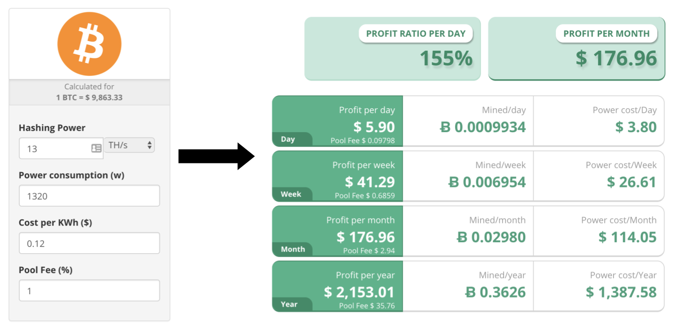

A person before deciding to mine bitcoin can use the “Bitcoin Mining Profitability Calculator” made by Cryptocompare.com
We will use the BitMain AntMiner S9 as our mining rig as that is the flagship in the market, which costs $2000 from BitMain’s website. We will assume the electricity cost is 12 cents per kilowatt hour as that is the average in the US. The S9 has a hashing rate of 13 terahashes per second and the power consumption is 1300W to 1340W so we can assume 1320 watts as an average. We will also need to factor in a pool fee of 1%. The bitcoin price was 9,863.33 9 as of (8/3/2018).
To calculate the profits all the above was inputted into the calculator.
If we look at the results, we can see that our yearly profit is $2,153. After subtracting the power cost and mining pool fees. The net profit comes to $153 after deducting the cost for the unit. This was done assuming that the bitcoin price will never change and fluctuate.
The quick answer to this question is YES (as of 8/3/18) but bitcoin itself is changing rapidly nowadays so the price might increase or decrease. In my opinion it’s not worth to mine bitcoin as 153 dollars is not much so incase the value drops you can potentially lose money.